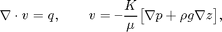
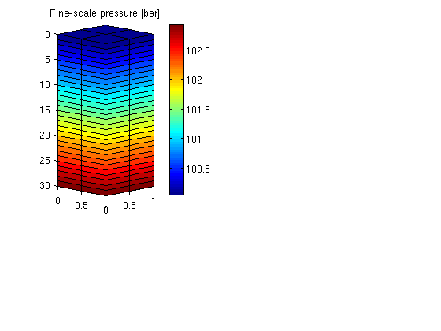
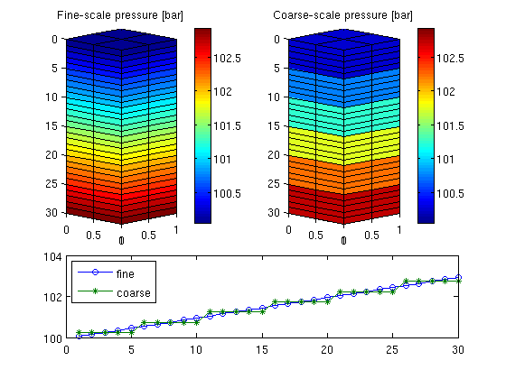

Contents
Multiscale Pressure Solver: Simple Case Driven by Gravity
Compare the fine-scale and the multiscale solver for the single-phase pressure equation

This example is a direction continuation of "My First Flow-Solver: Gravity Column" and introduces the multiscale flow solver without going into specific details. More details can be found in the "Basic Multiscale Tutorial".
require coarsegrid
Define the model
The domain [0,1]x[0,1]x[0,30] is discretized using a Cartesian grid with homogeneous isotropic permeability of 100 mD. The fluid has density 1000 kg/m^3 and viscosity 1 cP and the pressure is 100 bar at the top of the structure
nx = 2; ny = 2; nz = 30; Nx = 1; Ny = 1; Nz = 6; gravity reset on G = cartGrid([nx, ny, nz], [1, 1, 30]); G = computeGeometry(G); rock.perm = repmat(0.1*darcy(), [G.cells.num, 1]); fluid = initSingleFluid('mu' , 1*centi*poise , ... 'rho', 1014*kilogram/meter^3); bc = pside([], G, 'TOP', 100.*barsa);
Assemble and solve the fine-scale linear system
S = computeMimeticIP(G, rock);
sol = solveIncompFlow(initResSol(G , 0.0), G, S, fluid,'bc', bc);
Plot the fine-scale solution
newplot; subplot(3, 2, [1 3]) plotCellData(G, convertTo(sol.pressure(1:G.cells.num), barsa), ... 'EdgeColor', 'k'); set(gca, 'ZDir', 'reverse'), title('Fine-scale pressure [bar]') view(45,5), cx = caxis; colorbar
Multiscale system
p = partitionUI(G, [Nx, Ny, Nz]); p = processPartition (G, p); CG = generateCoarseGrid(G, p); CS = generateCoarseSystem(G, rock, S, CG, ones([G.cells.num, 1]),'bc', bc); xrMs = solveIncompFlowMS (initResSol(G, 0.0), G, CG, p, ... S, CS, fluid, 'bc', bc);
Plot the coarse-scale solution
As one clearly can see from the plot, the multiscale solution only captures the gravity effect on the coarse scale. To also capture fine-scale gravity effects, one can either add extra correction functions or insert the multiscale solution into the fine-scale equations and solve for a residual correction
subplot(3, 2, [2 4]) plotCellData(G, convertTo(xrMs.pressure(1:G.cells.num), barsa), ... 'EdgeColor', 'k'); set(gca, 'ZDir', 'reverse'); title('Coarse-scale pressure [bar]') view(45,5); caxis(cx); colorbar subplot(3, 2, [5 6]); plot(1:nz, convertTo(sol .pressure(1:nx*ny:nx*ny*nz), barsa()), '-o',... 1:nz, convertTo(xrMs.pressure(1:nx*ny:nx*ny*nz), barsa()), '-*'); legend('fine','coarse',2);